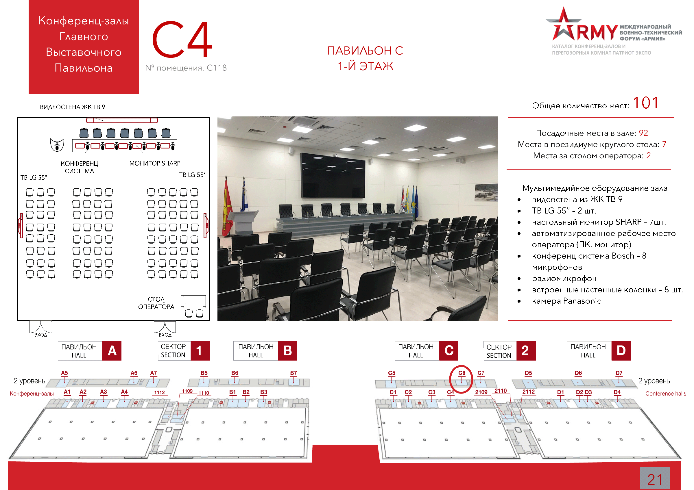

: 27.08.2020
: 14:30 - 19:00
: Конференц-зал C4
: Департамент металлургии и материалов Минпромторга России
: Марков Иван Александрович Тел: +7(495)647-7488
Флорова
Ирина Павловна Тел: +7(495)539-2112
| Время | Тематика доклада | Участник |
|---|---|---|
| 14:30-14:35 | Вступительное слово | Модератор |
| 14:35-14:50 | Доклад о реализации промышленной политики в части развития перспективных материалов | Серватинский Павел Адимович, директор Департамента металлургии и материалов Минпромторга России. |
| 14:50-15:05 | Новые многофункциональные композитные материалы: от университетских разработок к созданию промышленных производств | АО ИНУМиТ |
| 15:05-15:20 | Перспективные материалы на основе суперконструкционных термопластов | Акционерное общество Институт пластмасс имени Г.С. Петрова |
| 15:20-15:35 | Современные алюмоматричные материалы для авиационной промышленности | НИТУ МИСиС |
| 15:35-15:50 | Возможности повышения рабочих характеристик прецизионных сплавов с регламентированными упругими свойствами для гражданской продукции | ФГУП ЦНИИчермет им. И.П. Бардина |
| 15:50-16:05 | Разработка гибких пьезоматериалов и пьезопреобразователей на их основе для перспективных областей применения | АО НИИграфит |
| 16:05-16:20 | Инновационная продукция на основе стекловолокна и стеклопластиков | АО НПО Стеклопластик |
| 16:20-16:35 | Перерыв | Перерыв |
| 16:35-16:50 | Высокоэффективные конструкционные материалы на основе стекло- и базальтопластиков | ООО Гален |
| 16:50-17:05 | Современные полимерные композитные материалы в строительстве | АО НПК Химпроминжиниринг |
| 17:05-17:20 | Комплексные решения на основе композиционных материалов: от идеи до реализации | ООО НПП АпАТэК |
| 17:20-17:35 | Разработка и выпуск фольгированных стеклотекстолитов с реализацией концепции гибкого производственного комплекса в интересах ОПК и гражданской промышленности | АО Электромаш |
| 17:35-17:50 | Полимерно-композитные газовые баллоны типа КПГ-4 для транспортных средств и газозаправочных комплексов | АО ДПО Пластик |
| 17:50-18:05 | Кластер Новые конструкционные и функциональные материалы МГТУ им. Н.Э. Баумана как фундамент диверсификации ОПК в части новых материалов и технологий их переработки | МИЦ Композиты России МГТУ им. Н.Э. Баумана |
| 18:05-18:10 | Подведение итогов | Модератор |
